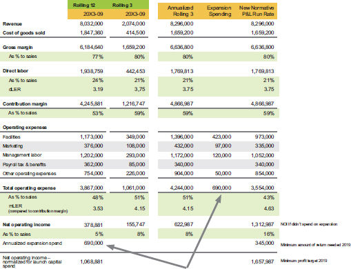

Launch capital for expansion: Annualized evaluation

By annualizing the quarter, we saw that the price increase had put the company on its best contribution margin path. Now we could focus on the operating expenses. By annualizing them, we could see the following:
It would not have been enough for us to tell the company only how much they would have made. They also needed to know that their new profit target, after the expansion was open, had to incorporate the 50% return on the expenses that were hiding in the profit-and-loss statement. Since they spent $690,000, their profit target for next year would be $345,000 higher. If all went according to plan, they would be looking at net profit of $1,657,987 after the new capacity had been online for a full year. Otherwise, they would have to question their strategy or their execution of the growth plans. I had the utmost confidence that this company could meet or exceed that target.
Traditional accounting reporting was not designed for this level of insight. You need to have a clear understanding of what costs support your ongoing business and develop a way to tag spending in every major category that you determine was not needed to maintain the current business. By default, that is what you are betting your profits on. This is totally different from retaining profits to fund increases in trade capital or repay debt. When you use profit to fund those elements, you can get your money back by reborrowing the debt you paid or collecting the receivable you funded. But when you make an expense bet, or what I call a catalytic spend, when your growth plan fails to launch, there is no getting your money back. When you put your money on the roulette wheel and the spin does not go your way, the pit boss is not going to give you your money back and let you try again.
Accounting Techniques for Longer-Term Launch
The sure way every accounting system can account for launch capital is to have specific general ledger accounts set up for those costs and tag them as they are incurred. Most systems have divisional accounting capability, and you can set up launch capital as a division. Otherwise you need to make a good enough monthly estimate of what the discretionary spend was and track it offline, like we do in the custom forecast models we run for our clients.
Another approach we are using for a software development client is to track all the labor and contractor costs on their balance sheet during the prelaunch phase of the software. This allows us to see the cumulative investment and feel the pressure build up to see what the final status will look like; then we can either get the software launched or stop development if we see that it costs considerably more than anticipated. We can also adjust our tax estimate planning, since most of that cost can be deducted in the year it is spent.
This is a great example of how to not let tax thinking drive your mindset. At the same time, it is beneficial to deduct the cost of building or expanding a product or service, to lower your cash outflow by the same amount as the tax benefit. But remember: it is never a good idea to spend a dollar to save 40 cents in tax! Spend only on things you believe will be more profitable than the amount of your investment.